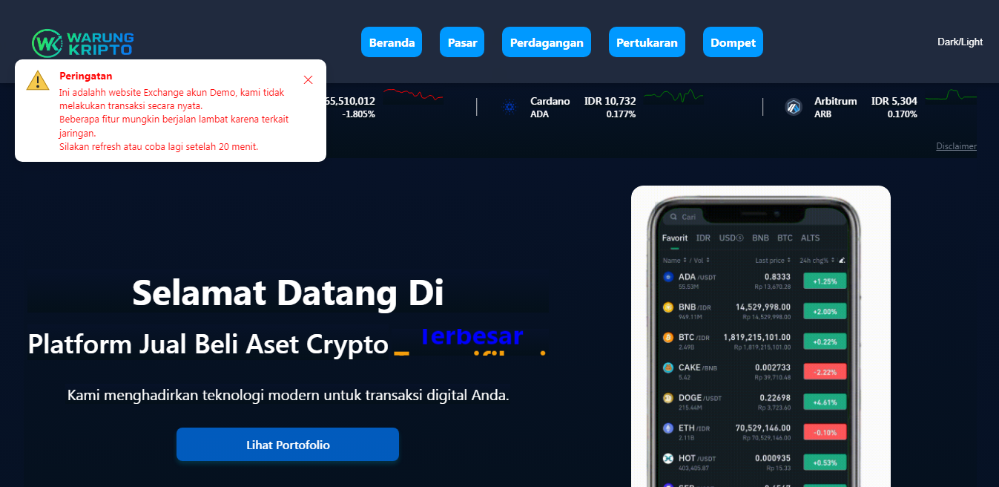
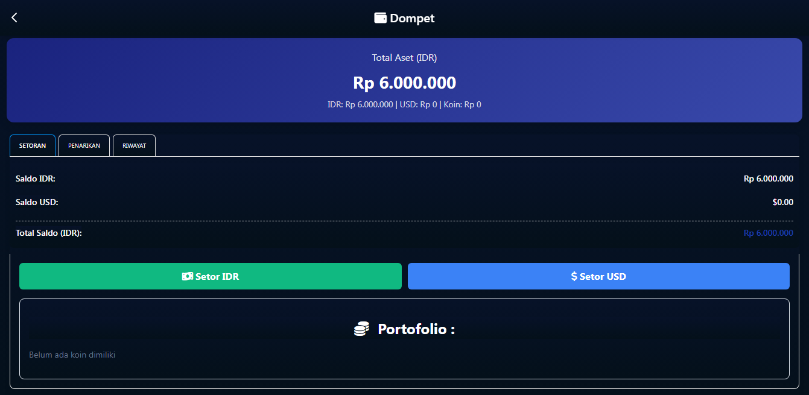
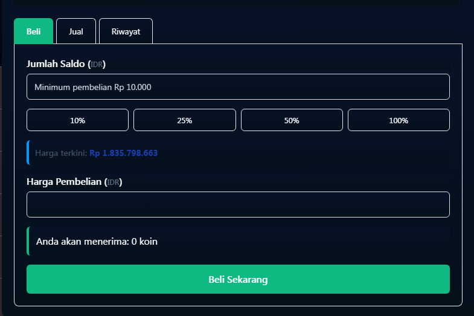
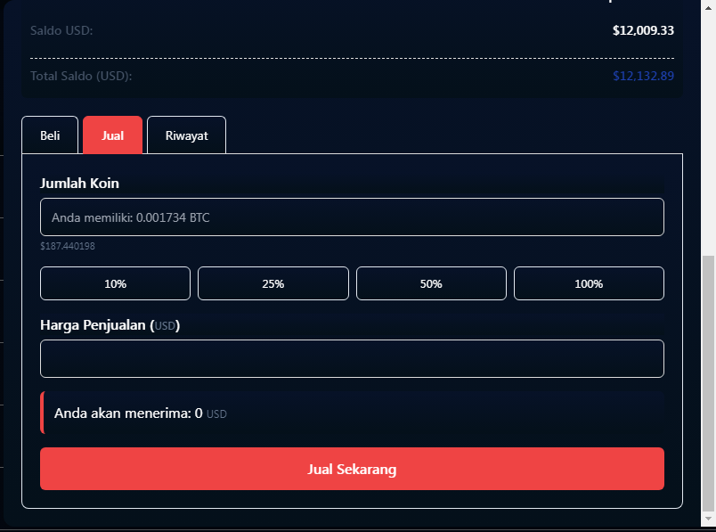

A. Cara Membeli Bitcoin
Untuk membeli atau menjual Bitcoin, kita perlu sebuah layanan aplikasi atau website yang menyediakan layanan tersebut atau yang dikenal dengan exchange, sebelum menjual atau membeli pastikan exchange yang sudah terpercaya dan terdaftar di instansi terkait misalnya OJK jika di indonesia.
Dalam menjual dan membeli bitcoin kali ini saya akan memberikan tutorialnya disebuah website Demo di Warung Kripto, sekali lagi ini hanya website Demo alias bukan jual beli Bitcoin yang resmi, ini hanya untuk menambah wawasan saja.
Untuk membeli dan menjual Bitcoin di Warung Kripto saya membagi ada 2 cara yaitu dari mekanisme Pasar dan mekanisme Perdagangan.
1. Cara Membeli Bitcoin dengan Mekanisme Pasar
1. Kunjungi Website Warung Kripto
2. Pilih Tab Dompet pada Tab Header untuk mengisi saldo
3. Isikan saldo Anda dalam bentuk IDR atau USD boleh kedua-duanya untuk di isi saldo
4. Klik tombol Setor IDR atau USD dan isikan saldo yang akan di setor, penyetoran minimal Rp.10.000 untuk IDR dan $1 untuk USD, kemudian tekan tombol Setor. Dana akan masuk ke Dompet dalam bentuk saldo IDR atau saldo USD

5. Sekarang kita sudah mempunyai Saldo, langkah selanjutnya kita akan membeli Bitcoin atau Crypto lainnya, caranya kembali ke Beranda atau Home dengan menekan Tombol < (versi Desktop) pada taskbar diatas atau icon Home (vesrsi mobile)
6. Setelah kita berada di Beranda atau Home, klik Tab Pasar maka akan muncul tabel crypto, kemudian pilih mata uang yang ingin diperdagangkan (IDR atau USD) setelah menentukan mata uang, pilih crypto yang akan di beli dalam hal ini Bitcoin dengan menekan tombol Beli, setelah itu muncul Chart dan harga Bitcoin lalu scroll kebawah hingga menemukan tab Transaksi jual-Beli

7. Masukan harga pembelian pada bagian Jumlah Saldo. mimimum pembelian Rp 10.000 atau $1, Anda bisa menggunakan tombol persentase dari saldo Anda untuk membelinya. Setelah selesai memasukan harga pembelian tekan tombol Beli Sekarang
8. Klik Tab Riwayat untuk memastikan transaksi Anda atau klik Tab Dompet untuk melihat Portofolio Anda
9. Selesai
2. Cara Membeli bitcoin dengan mekanisme Perdagangan
Keamanan wallet adalah prioritas utama. Selalu aktifkan fitur keamanan tambahan seperti autentikasi dua faktor (2FA) dan jangan pernah membagikan private key kepada siapa pun. Simpan cadangan recovery phrase di tempat yang aman dan terpisah dari perangkat utama.
Hindari menggunakan jaringan Wi-Fi publik saat mengakses wallet dan pastikan perangkatmu terlindungi dari virus atau malware. Sedikit kelalaian dapat menyebabkan kehilangan seluruh asetmu secara permanen.
B. Cara Menjual Bitcoin
Untuk menjual Bitcoin caranya sama dengan cara membeli Bitcoin dengan mekanisme Pasar atau Perdagangan, bedanya kita harus memilih dan mengklik Tab Jual. Sebelum menjual pastikan untuk memilih mata uangnya terlebih dahulu yaitu IDR atau USD . 
Caranya masukan jumlah koin yang akan dijual, agar lebih mudah menghitungnya pilih tombol persentase misalnya 100% artinya akan menjual semua koinnya, setelah menentukan jumlah koin yang akan dijual klik tombol Jual Sekarang maka akan muncul notifikasi penjualan berhasil, hasil penjualan bisa di lihat di Riwayat atau cek Dompet, saldo akan masuk di Dompet dalam bentuk Saldo IDR atau Saldo USD tergantung anda menjualnya dengan mata uang apa